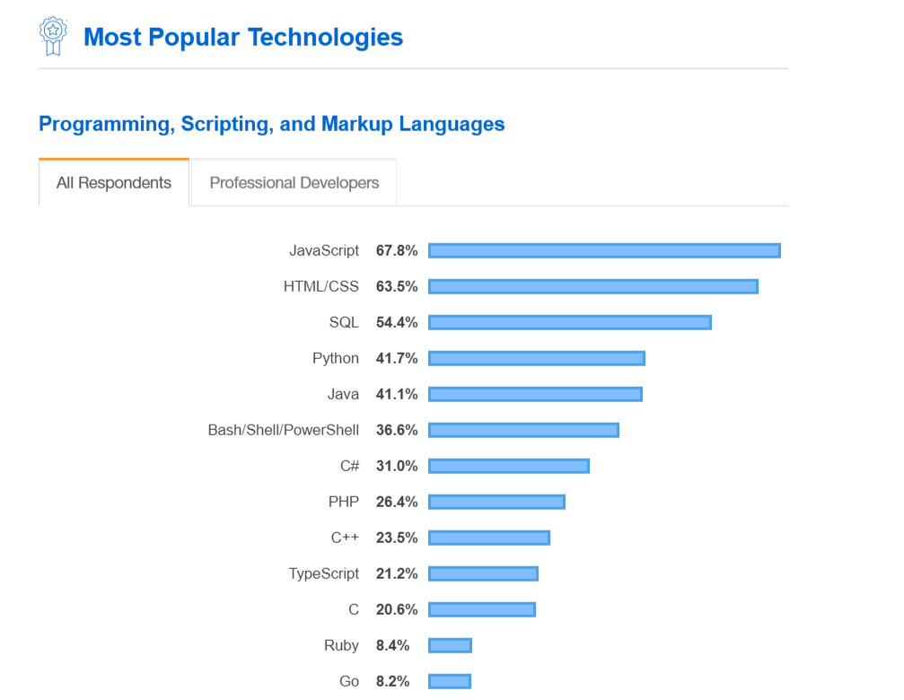

HomeWork1
Best Web Development
Introduction
Editing HTML and CSS code can be
done with nothing but a simple text editor.However,if you’d
like
to take your programming skills (and output) to the next
level,it’s worth looking into an integrated development environment or
IDE .
A bare-bones IDE will allow you to code,edit, test, and
debug. However, an advanced IDE , like the ones
listed here, will offer many features that will enhance your programming
experiences like automation, visualization, and customization.
We should use the IDE
- Visual Studio Code
- IntelliJ IDEA
- Sublime Text3
- NetBeans
- PyCharm
1.Visual Studio Code
- Pros&Cons
- + High speed
- + Beginner friendly
- + Well documented
- + Interoperability
- + Independency
- - Security
- - Controllable
- - Compatibility
2.IntelliJ IDEA
- Pros&Cons
-
+ Inbuilt support for a web server which makes Java web application
faster.
-
+ Auto code completion. By just typing a few words, it will complete
the whole code block like try catch.
-
+ Lots of plugins like Sonar Lint . Using those you
can analyse your code while writing it.
- + Provides a decompiled code of libraries which can help a lot.
- - It is a very heavy tool and consumes a lot of memory.
-
- If you are a new java developer, then you shouldn't use it heavily
as it will affect your learning ability.
3.Sublime Text
- Pros&Cons
-
+ The biggest advantage over many other editors is the ability to open
large files. Some editors just can't open a CSV with
millions of lines but
Sublime Text does it
like a champ.
-
+ Multiple selections let you change or create many instances of the
same variable or value with ease.
-
+ The Goto Anything simplifies navigation and lets you
control, open, or move within files without ever having to take your
hands off the keyboard.
-
+ Likewise, the command palette allows you to access any of the
application's functionality right from the keyboard.
-
+ It is highly customizable with a rich ecosystem of third party
plugins and the ability to create your own.
-
- In a world of free and open text editors,
Sublime Text does ask for donations. You can use the product freely with only a
very infrequent popup
asking for donations. You can use it however long you like without
paying, but it is well worth it to donate to.
-
- People not used to the functionality may need a bit of time to get
up to speed using the documentation.
-
- An integrated terminal would be nice, but that is just a quibble.
It's hard to find many cons with Sublime Text .
4.NetBeans
- Pros&Cons
-
+ Formatting and defining rules for each language is a very useful
feature in this IDE .
-
+ The code can be deployed very easy from Netbeans
itself.
-
- It should provide more themes and background colors for the code
window. Some dark themes are good but they slow down the system.
-
- There have been a few bugs in the latest version of
NetBeans .
NetBean's developer should resolve those bugs.
5.PyCharm
- Pros&Cons
- + Data science scripting.
- + Frontend development based on Python.
-
- Community edition is, while quite usable, far behind the paid
alternative. At least a basic database support would be nice.
HomeWork2
Top 10 In-Demand Programming Languages in 2021
Top Programming Languages 2021
Today we are using technology and it is having an effect.Most people are
now effectively using computer-understood languages and programming
languages.
People control computers and write programs and create software. There
are two programming languages: advanced programming languages
and low-level programming languages. Advanced programming language is
easy to understand and can write words and source code symbols,
for example -( Java, C ++, PHP) Advanced programming
language is understood as a business model that can run as fast as the
program provides the cost of the vehicle.
Of the many programming languages so far,which one is the best in
2021 and how will it be used in the future ? Therefore,programmers are
needed in the future.
Most Popular Technologies

Programming language 2021 for game development and much
more. We are
compiling a list of The Top 10 Programming Languages of the
future that
will emerge in 2021. Next year could take the
programming world to a whole
new place Programming languages are considered to be a hierarchical
era.
No more doors. Mobile app development; Web development၊ Let's
explore the new
programming language 2021 for
game development and much more.
- Python
- Java
- C++
- Javascript
- Golang
- Swift
- PHP
- Kotlin
- Ruby
- R
Types of Programming Languages
Developers use suitable programming languages for their own
particular
project purpose or syntax they want to use to generate instructions.
Here are different sorts of programming languages they use-

Low-level Languages
Using these kinds of languages offers abstraction from the hardware and
are depicted in the binary
form that is either 0 or 1 referred to as machine
instruction. Low-level languages also have two
types
Machine-level languages.
Assembly Level Languages.
High-level Languages
It permits developers to code programs that are not related to the type
of
computer. These are close to human languages and understandable
easily,
it’s just that it needs attention for the problem LogiC . It has advantages
like Easy to maintain and learn Portability with the
machine-independency.
Quoted From That Website
Written by Nidhi Sharma | Mar 25, 2021

HomeWork3
"Salary"
We can see in the US , mobile manufacturers and
academics tend to have higher pay relative to other jobs compared to the
global developer population.The highest-paid are engineering managers,
SREs,DevOps Professionals, and Data Engineers.
Engineering manager, SREs,DevOps, and,data engineers see salaries if
they experience them, but Designers have more than 10 years of
experience on average but are the lowest-paid.
Changes in salary data from 2020 to 2021
Brittany Meiling, Los Angeles Times, July 31, 2021,
"Employers bow to tech workers in hottest job market since the dot-com
era"
A skilled Developer is well-known for hearing many customers and says
that technology has excelled in employment prospects for the past decade
and has been catalyzed to an unexpected level in 20 years.Software
Developers Are most demanded in IT developers. IT's amazing how quickly
it can advertise businesses around the world. Companies that have
succeeded in attracting and retaining top talent will be those taking
the time to build a fast ITfound that between late 2019 and late 2020,
an average pay increase of 3.6 per cent was seen.That's a lot Although
not, annual increases of less than 1% are a significant jump compared to
2017 and 2019track approach that gives technicians flexibility and
control over their work environment.
.png)